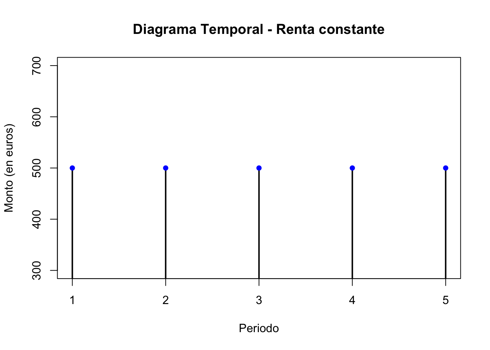
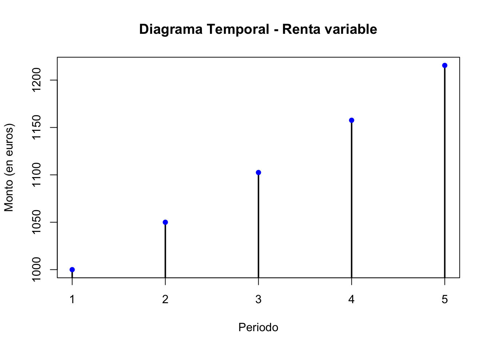

Sesión 2 - Renta fija y rentas financieras
🎥 Vídeo
🗂️ Presentación
📝 Test de autoevaluación de la sesión
Importante
Haz clic en el siguiente botón para acceder al formulario del test correspondiente a esta clase. Se abrirá en una nueva pestaña.
Rentas financieras
Concepto
Se aplica la herramienta del interés compuesto a la valoración de conjuntos de capitales financieros; más concretamente, por la amplia utilización que el mercado hace de ellas, se estudian las rentas financieras, al considerar que gran parte de las operaciones financieras están utilizando pagos o cobros periódicos en el tiempo, haciendo especial hincapié en los aspectos que afectan a su clasificación y a la valoración de rentas constantes.
Objetivos
Situar el flujo de cobros o pagos de una renta financiera en un diagrama temporal y clasificarlo
Calcular el valor actual y final de rentas constantes y variables
Las rentas financieras son conjuntos de capitales financieros que involucran pagos o cobros periódicos en el tiempo. Estas rentas son ampliamente utilizadas en el mercado financiero y se basan en pagos o cobros periódicos, lo cual justifica su estudio y análisis.
La renta financiera está compuesta por dos elementos principales:
Términos de la renta: Estos son los distintos capitales financieros o pagos que componen la renta. Cada término representa una cantidad específica de dinero que se paga o se recibe en un determinado período de tiempo. Los términos pueden ser iguales o diferentes entre sí, dependiendo de la naturaleza de la renta. Por ejemplo, en una renta fija, los términos suelen ser iguales, mientras que en una renta variable pueden variar en cantidad.
Periodo de la renta: Es el plazo constante que separa dos términos consecutivos en la secuencia de pagos o cobros de la renta. Este período puede ser mensual, trimestral, anual u otra unidad de tiempo, dependiendo de cómo se haya establecido la frecuencia de los pagos o cobros de la renta. Es importante que el período sea constante para poder calcular de manera precisa el valor y la valoración de la renta.
Las rentas pueden ser clasificadas de acuerdo a diferentes criterios. Los principales son:
- Según la cuantía de los términos de la renta:
- Renta constante: cuando las cuantías de todos los términos son iguales.
- Renta variable: cuando las cuantías de los términos no son iguales.
- Según el número de términos de la renta:
- Renta temporal: cuando el número de términos es finito.
- Renta perpetua: cuando el número de términos es infinito.
- Según el periodo de la renta:
- Renta mensual, trimestral, anual, etc.
- Según el inicio del primer periodo de la renta:
- Renta inmediata: cuando el inicio del primer periodo de la renta coincide con el instante inicial de valoración.
- Renta diferida: cuando el inicio del primer periodo de la renta es posterior al instante inicial de valoración.
- Según el instante en que se hace efectiva la cuantía dentro de cada periodo:
- Renta postpagable o vencida: cuando la cuantía se hace efectiva al final de cada periodo.
- Renta prepagable o anticipada: cuando la cuantía se hace efectiva al inicio de cada periodo.
Al clasificar una renta nos interesará sobre todo identificar entre dos categorías principales:
Renta constante: En este tipo de renta, los pagos o cobros (términos) tienen un monto constante en cada periodo. La renta más típica sería un préstamo hipotecario concedido por el método de amortización francés (cuota constante).
Renta variable: En este caso, los pagos o cobros varían en cada periodo. Un ejemplo típico es el método de Gordon-Shapiro se utiliza para estimar el valor intrínseco de una acción en función de los dividendos esperados y las tasas de crecimiento.
Para comprender mejor una renta financiera, es útil representar el flujo de cobros o pagos en un diagrama temporal. Este diagrama muestra el eje horizontal como el tiempo y el eje vertical como el monto de los cobros o pagos.
Por ejemplo, una renta mensual de 500 euros durante un período de tiempo específico. En el diagrama temporal, los pagos se representan mediante líneas horizontales paralelas.

Por ejemplo, una renta que comienza con un pago de 1.000 euros y experimenta cambios en cada periodo, ya sea en aumento o disminución. En el diagrama temporal, los pagos se representan mediante líneas que varían en cada periodo.
Además de clasificar las rentas financieras, es fundamental calcular su valor actual y final en el contexto del interés compuesto.
El valor actual de una renta constante representa la suma de los pagos descontados en el momento presente, considerando una tasa de interés adecuada.
El valor final de una renta constante se refiere al monto acumulado al final de la serie de pagos. Estos cálculos se realizan utilizando fórmulas específicas que tienen en cuenta la tasa de interés, el monto de los pagos y el número de periodos.
Para calcular el valor de una renta y aplicar el concepto de interés compuesto, es habitual trabajar con tipos nominales y efectivos expresados en diferentes frecuencias (mensual, trimestral, anual). Es fundamental en este sentido utilizar el tipo de interés correspondiente a la frecuencia de los cobros y pagos asociados a la renta, a fin de obtener una valoración precisa y realista. Es decir, que debemos de reflejar adecuadamente la renta en función del periodo en el que se producen los flujos de caja (términos mensuales, por ejemplo) y el período del tipo de interés a aplicar (tendrá que ser mensual en este caso), asegurando así una evaluación precisa y acorde a la situación.
El valor actual representa la suma de los pagos descontados al presente, teniendo en cuenta una tasa de interés adecuada.
La fórmula general para calcular el valor actual de una renta constante es:
\[V_0=c\cdot\frac{1-\left(1+i\right)^{-n}}{i}\]
Donde,
\(V_0\), es el valor actual.
\(C\), es cuota o cuantía.
\(i\), es el tipo de interés.
\(n\), es el tiempo transcurrido.
Por otro lado, el valor final de una renta constante se refiere al monto acumulado al final de la serie de pagos.
La fórmula para calcular el valor final de una renta constante es: \[V_f=c\cdot\frac{\left(1+i\right)^{n}-1}{i}\]
Donde,
\(V_f\), es el valor final.
\(C\), es cuota o cuantía.
\(i\), es el tipo de interés.
\(n\), es el tiempo transcurrido.
Estas fórmulas son fundamentales para calcular el valor actual y final de una renta constante, lo cual permite evaluar la rentabilidad y viabilidad de operaciones financieras que involucran flujos de pagos o cobros periódicos en el tiempo.
Las fórmulas presentadas anteriormente son para calcular rentas postpagables, es decir, en las que los pagos se realizan al final de cada período. Sin embargo, es posible convertir una renta prepagable, en la que los pagos se realizan al inicio de cada período, en una renta postpagable cambiando el momento de los pagos.
Para una renta constante prepagable, el valor actual se calcula utilizando la fórmula:
\[V_0=c\cdot\frac{1-\left(1+i\right)^{-n}}{i}\cdot(1+i)^n\]
Y, el valor final:
\[V_f=c\cdot\frac{\left(1+i\right)^{n}-1}{i}\cdot(1+i)^n\]
La diferencia entre ambas fórmulas (perpagables y postpagables) radica en la presencia del factor \((1 + i)^n\) en la fórmula de la renta prepagable. Este factor tiene en cuenta los pagos anticipados realizados al inicio de cada período, lo cual afecta el valor actual de la renta.
Es importante entender la diferencia entre estos dos tipos de rentas para poder aplicar las fórmulas correctamente.
Por ejemplo, una renta postpagable se aplica a un préstamo en el cual se efectúan pagos periódicos después de cada período. En contraste, una renta prepagable se relaciona con un contrato de alquiler en el que se realizan pagos anticipados para asegurar el derecho de disfrute de la propiedad en períodos futuros.
Renta Fija
Esquema del mercado de renta fija privada
flowchart TB C[Mercado de Renta Fija Privada] --> C1[Estructura del mercado] C --> C2[Tipología de activos] C --> D[Rating] C --> E[Riesgos asociados] C2 --> C2a[Pagarés, bonos, obligaciones privadas] C2 --> C2b[Cédulas, bonos y participaciones hipotecarias] C2 --> C2c[Preferentes, titulizados, convertibles] C2 --> C2d[Bonos verdes, sociales, sostenibles] E --> E1[Interés] E --> E2[Crédito] E --> E3[Liquidez] E --> E4[Tipo de cambio] E --> E5[Amortización anticipada]
Esquema: Valoración y relación precio-TIR
flowchart TB F[Valoración de activos] --> F1[Precio y rentabilidad a corto] F --> F2[Precio bonos con cupones] F --> F3[Precio entero, excupón, cupón corrido] F --> F4[Rentabilidad efectiva y reinversión] F --> F5[A la par, sobre la par, bajo la par] F --> F6[Precio bono cupón cero] G[Relación Precio-TIR] --> G1[Principios de Malkiel]
Esquema: Curva de tipos y gestión del riesgo
flowchart TB H[Curva de rentabilidades y ETTI] --> H1["Curva e implícitos forward"] H --> H2["Teorías: expectativas, liquidez, segmentación"] I[Medición y gestión del riesgo] --> I1["Duración y duración modificada"] I --> I2[Sensibilidad] I --> I3[Inmunización de carteras]
Concepto
Un activo de renta fija es un valor que representa una deuda para el emisor y que tiene una retribución que se fija, generalmente, por adelantado.
Un activo de renta fija es, por lo tanto, un valor que representa el derecho a recibir pagos periódicos o al final de la operación, prefijados y regulares en el futuro.
El emisor de un bono debe seleccionar las condiciones (fecha de emisión, fecha de vencimiento, tipo de interés, periodicidad de pago, etc.) que una vez fijadas no se pueden modificar. Por ese motivo este tipo de activos reciben el nombre de renta fija.
Los elementos característicos de un título de renta fija son los siguientes:
Tipo de emisor: es aquel que obtiene la financiación del mercado y asume la obligación de pagar los cupones y devolver el principal. Puede ser público (administraciones públicas) o privado (bancos y empresas).
Valor Nominal (VN): Monto de la deuda contraída por el emisor con el suscriptor, comprador o tenedor del título.
Precio de emisión (Pe): Precio al que se emite y suscribe el título en el mercado primario.
Número de títulos emitidos (N): Unidades en las que se divide el empréstito.
Importe de la emisión (VN x N): Valor total de la emisión calculado multiplicando el valor nominal por el número de títulos emitidos.
Fecha de emisión: Fecha en la que se emite y pone en circulación el título de renta fija.
Fecha de vencimiento: Fecha en la que finaliza la vida del título y se debe devolver el valor nominal.
Cupón: Pago periódico de interés que se calcula como un porcentaje del valor nominal del título.
Frecuencia de pago: Periodo en el que se realiza el pago del cupón, que puede ser anual, semestral, al vencimiento, entre otros.
Amortización: Monto devuelto por el emisor al vencimiento o en fechas preestablecidas, generalmente como un porcentaje del valor nominal.
Rating: Calificación crediticia asignada al emisor o a la emisión de renta fija, que indica su calidad crediticia y nivel de riesgo.
Vencimiento: fecha en que se termina de repagar la totalidad de la deuda. En este momento el bono cesa.
Bono cupón cero: son aquellos instrumentos, emitidos al descuento, que no generan flujos intermedios (no pagan cupones). El rendimiento es el obtenido por la diferencia entre el precio de compra y el de venta o amortización del título.
TIR: rendimiento del instrumento a priori, que dependerá de las condiciones de mercado. No confundir con el cupón con la TIR, ya que el primero es fijo y la segunda dependerá del precio al que se adquiera el título.
TRE: Tasa de Rentabilidad Efectiva o rendimiento real obtenido después de realizar la inversión. Se calcula teniendo en cuenta los flujos de efectivo reales que se generan durante la vida de la inversión, incluyendo los ingresos y los desembolsos de efectivo. La rentabilidad efectiva refleja el rendimiento real de la inversión, teniendo en cuenta cualquier variación en los flujos de efectivo y las tasas de interés.
Estos elementos son importantes para comprender y evaluar los títulos de renta fija en términos de su emisor, valor, precio, pagos de intereses, fechas y riesgo crediticio.
Según el vencimiento del activo, los títulos de renta fija se pueden clasificar en dos categorías:
Activos monetarios: Son aquellos activos de renta fija cuyo vencimiento en el momento de la emisión se sitúa generalmente en torno a los dieciocho meses o en plazos inferiores. Estos activos suelen tener un plazo de vencimiento corto y se utilizan para cubrir necesidades de financiamiento a corto plazo. Ejemplos de activos monetarios son las Letras del Tesoro y los Pagarés de empresa.
Activos del mercado de capitales: Son activos de renta fija cuyo vencimiento en el momento de la emisión es superior a los dieciocho meses. Estos activos se emiten en plazos más largos y suelen formar parte del mercado de capitales. Los plazos típicos para estos activos son 3, 5, 10, 15, 20 y 30 años. Ejemplos de activos del mercado de capitales son los Bonos y Obligaciones del Estado.
La clasificación según el tipo de interés sería:
Activos con interés implícito:
- Activos al descuento: Son activos en los que el interés o rendimiento se obtiene a partir del diferencial entre el precio de suscripción o compra y el precio de venta o amortización. En estos activos, la amortización se realiza al valor nominal. Los ejemplos típicos son las Letras del Tesoro, los Pagarés de Empresa y los Bonos Cupón Cero (STRIPS).
Activos con interés implícito y explícito:
Los intereses explícitos que devenga un activo de renta fija se denominan cupones.
Activos con prima de emisión: Son activos en los que el interés total se compone tanto del diferencial de amortización o venta menos la suscripción o compra, como del pago de cupones periódicos. Estos activos se emiten a un precio inferior al valor nominal (bajo par).
Activos con prima de reembolso: Son activos de interés explícito en los que el valor de reembolso es superior al valor nominal. Además de los cupones periódicos, al vencimiento el inversor recibirá un monto superior al valor nominal (amortización sobre par).
Estructura del mercado de deuda pública
Activos que se negocian
Letras del Tesoro
Títulos a corto plazo.
Emitidos al descuento.
Representados por anotaciones en cuenta en la Central de Anotaciones de BdE.
La rentabilidad es la diferencia entre el valor nominal y el precio de adquisición pagado por el inversor.
Procedimiento de emisión mediante subasta española.
Bonos y obligaciones del estado
Títulos a largo plazo. Bonos a 3 y 5 años y Obligaciones a 10, 15 y 30 años.
Representados por anotaciones en cuenta en la Central de Anotaciones de BdE.
Pagan cupones anuales siendo reembolsables a vencimiento por su valor nominal.
Procedimiento de emisión mediante subasta española.
Miembros del mercado
El Tesoro
Cubrir las necesidades de endeudamiento del Estado al menor coste posible.
Mantener un adecuado grado de liquidez en el mercado.
Ofrecer a los inversores instrumentos financieros atractivos.
Banco de España
Agente financiero de la deuda pública.
Gestiona la Central de Anotaciones.
Supervisa el funcionamiento y la transparencia del mercado de Deuda Pública.
Entidades Gestoras
Llevan las cuentas de quienes no están autorizados a operar directamente a través de la central de Anotaciones.
Salvo que sean agencias de valores, pueden ser Titular de Cuenta.
Realizan funciones registrales, de compensación y liquidación y de custodia en relación al mercado de deuda pública.
Creadores de mercado
Entidades financieras cuyo objetivo es favorecer la liquidez del mercado secundario.
Cotizan sistemáticamente precios de compra y de venta y operan con unos volúmenes mínimos.
Mercado primario: procedimiento de emisión de los valores del Tesoro
El Tesoro español puede emitir Letras del Tesoro, Bonos y Obligaciones del Estado mediante dos métodos: sindicación u oferta pública.
Mercado secundario
La negociación en el mercado secundario se puede realizar a través de varios sistemas
Mercado de renta fija privada
En el mercado de renta fija privada se utilizan diferentes instrumentos, como:
- Pagarés de empresa
- Bonos convertibles
- Acciones preferentes
- Fondos de titulización de activos
Rating
El rating o solvencia crediticia conocido también como el riesgo de crédito (o de contraparte), se mide como la posibilidad de que el emisor de un bono no pueda hacer frente a los pagos de los cupones o del principal
Po lo tanto a través del rating podremos valorar el nivel de solvencia de un emisor y sus perspectivas futuras de pago. El rating proporciona un indicador de referencia del riesgo crediticio que soporta el inversor. Esta calificación se realiza por empresas independientes especializadas en el análisis de riesgos, siendo las principales Moody ́s, Standard and Poor ́s y Fitch.
Por lo general, cuanto mejor sea la calificación crediticia (rating) de un emisor o de una emisión, menor será la prima de riesgo del bono y, por lo tanto, menor será su rentabilidad exigida.
Otros riesgos asociados a la renta fija
La denominación de “renta fija” puede ser engañosa, ya que puede dar la impresión de que la rentabilidad está preestablecida y garantizada. Sin embargo, en realidad, lo que es fijo en una inversión de renta fija es el conocimiento previo de los montos, las fechas en que el emisor pagará los cupones y la devolución del principal. Sin embargo, debido a la variación de los tipos de interés en el mercado, el precio de un título de renta fija puede fluctuar al igual que cualquier otro activo financiero, subiendo o bajando.
Los riesgos potenciales asociados a la renta fija son:
• Riesgo de precio
• Riesgo de reinversión
• Riesgo de crédito
• Riesgo de inflación
• Riesgo de tipo de cambio
• Riesgo de amortización anticipada
• Riesgo de liquidez
En esta parte nos centraremos en los dos primeros, entendidos como el riesgo de tipo de interés:
El riesgo de precio es la principal fuente de incertidumbre a la que se enfrenta un inversor en productos de renta fija. Todos los productos de renta fija están sujetos a este riesgo.Ya que cuando el tipo de interés de mercado sube, el precio del bono baja.Y, viceversa, cuando el tipo de interés de mercado baja, el precio del bono sube.
El riesgo de reinversión aparece en aquellos activos de renta fija con rendimiento explícito y se refiere al hecho de que durante el transcurso de la vida de un bono, se asume la incertidumbre sobre la reinversión del importe cobrado del cupón. El cupón se reinvertirá en otro producto de renta fija que tendrá, muy probablemente, un tipo de interés superior o inferior al del producto en su momento inicial.
Relación precio-TIR: principios de Malkiel
La relación precio-TIR sigue los principios de Malkiel, que incluyen:
- El valor de un activo de renta fija varía en sentido inverso a su rentabilidad.
- Los activos con menor cupón experimentan mayores cambios de valor.
- Un incremento de la TIR supone una caída de precio inferior a la caída provocada por una disminución de la TIR.
Curva y estructura temporal de los tipos de interés (ETTI)
La curva de tipos de interés es una herramienta importante en el mercado financiero que proporciona información sobre las rentabilidades de los activos de renta fija en relación con sus vencimientos. La curva se representa gráficamente trazando los rendimientos de los bonos con diferentes vencimientos. La estructura temporal de los tipos de interés, por su parte, muestra los rendimientos de los bonos cupón cero y se utiliza para analizar la relación entre los tipos de interés y los vencimientos.
El perfil de la curva de tipos de interés, o de un tramo de ella, puede ser plano, creciente o decreciente. Un perfil plano indica que los rendimientos son similares para todos los vencimientos, mientras que un perfil creciente indica que los rendimientos aumentan a medida que aumenta el vencimiento. Por el contrario, un perfil decreciente indica que los rendimientos disminuyen a medida que aumenta el vencimiento.
Es importante tener en cuenta que si hay cambios en las expectativas o variables relevantes, las curvas de tipos de interés se desplazan y modifican su perfil. Por ejemplo, si se espera que la inflación aumente, esto puede provocar un aumento en los tipos de interés a largo plazo y una pendiente más pronunciada en la curva. En general, la curva de tipos de interés es una herramienta valiosa para los inversores y analistas financieros que buscan entender las tendencias del mercado y tomar decisiones informadas sobre sus inversiones.
Teorías explicativas de la ETTI
La curva de tipos de interés muestra las rentabilidades de los activos de renta fija en relación con sus vencimientos. Existen diferentes teorías que explican cómo se forma la curva. La Teoría de la Preferencia por la Liquidez establece que la curva debe ser creciente, ya que los inversores prefieren invertir a corto plazo para poder convertir en liquidez los activos si es necesario. La Teoría de las Expectativas del Mercado indica que la curva se forma en función de las expectativas de los inversores sobre cómo evolucionarán los tipos de interés en el futuro. Finalmente, la Teoría del Hábitat Preferido sintetiza estas teorías y establece que la oferta y la demanda de activos financieros debe ajustar sus plazos según el “hábitat” en el que se encuentren, existiendo primas para aquellos vencimientos donde hay una demanda insuficiente. En general, estas teorías son útiles para entender las tendencias del mercado y tomar decisiones informadas sobre las inversiones.
Un desarrollo más amplio de las teorías explicativas de la estructura temporal de los tipos de interés (ETTI) sería:
De la Teoría de la Preferencia por la liquidez, se infiere que la curva de rendimientos de una inversión será siempre creciente en función del tiempo, ya que en principio un inversor preferirá invertir a corto plazo que a largo plazo, al poder conseguir convertir antes en liquidez los activos si así le fuera necesario.
La Teoría de las Expectativas del Mercado, enuncia que la ETTI se forma de manera exclusiva en función de las expectativas que tienen los potenciales inversores en relación a cómo van a evolucionar los tipos de interés en el futuro. Por tanto, la curva sería creciente cuando se espere que los tipos vayan a subir debido a que haya por ejemplo una elevada inflación, y sería descendente cuando la expectativa fuera de bajada de la inflación.
La Teoría del Hábitat Preferido, por su parte ha tratado de sintetizar estas teorías, estableciendo que el equilibrio de mercado obliga a que la oferta y la demanda de activos financieros debe ajustar sus plazos en cada momento, según el “hábitat” en el que nos encontremos, existiendo primas para aquellos vencimientos donde hay una demanda insuficiente, de tal manera que dichas primas serían las que inducirían a los inversores al abandono de sus hábitats preferidos, pasando de largo a corto plazo o viceversa.
Ejemplo ETTI
Si las cotizaciones actuales de los bonos cupón cero a 3,5 y 10 años es del 100% y sus valores de reembolso son: 115,76%, 127,63% y 162,89% respectivamente, ¿cuál será el perfil que adopte la ETTI?
Positiva.
Negativa.
Plana.
Exponencial.
La respuesta correcta es la c.
Para saber que el perfil adoptará la ETTI simplemente deberemos calcular el valor que toma la TIR de los 3 bonos cupón cero referidos y, ordenalos en función de su plazo de vencimiento. De forma que si el precio de un bono cupón cero viene dado por:
\[P_0(\%)=\frac{Reembolso(\%)}{(1+TIR)^{n}}\]
BONO 1
\[100=\frac{115,76}{(1+TIR)^{3}}=>TIR=5\%\]
BONO 2
\[100=\frac{127,63}{(1+TIR)^{5}}=>TIR=5\%\]
BONO 3
\[100=\frac{162,89}{(1+TIR)^{10}}=>TIR=5\%\]
luego, el perfil que adoptará la ETTI será plano ya que para los tres bonos la tasa interna de rentabilidad (TIR) a, 5 y 10 años es igual al 5%.
Medición y gestión del riesgo de tipo de interés
Sensibilidad
La sensibilidad es una herramienta valiosa para determinar cómo se comportará el precio de un bono ante pequeñas variaciones en la TIR. Es por tanto, una medida de riesgo en la gestión de activos de renta fija. Esta medida nos indica cuán “sensible” es el precio del bono (en términos absolutos, viene dada en unidades monetarias) a las fluctuaciones absolutas que se producen en los tipos de interés.
En escenarios de tipos de interés bajos, un bono con una sensibilidad mayor experimentará un aumento de precio más significativo si se produce una variación en la TIR.
Por otro lado, en escenarios de tipos de interés altos, un bono con una sensibilidad menor experimentará una disminución de precio menor si hay una variación en la TIR.
Sin embargo, como la sensibilidad refleja las variaciones de los precios en términos absolutos, no es adecuada para comparar bonos con diferentes precios y características. En este caso, se requiere un análisis de la duración de los bonos.
Para hallar la sensibilidad (o sensibilidad absoluta) ante cambios en el precio, calcularemos lo siguiente:
- La Duración de Macaulay
\[D=\frac{\sum_{t=1}^{n}\frac{F_t\cdot t}{\left(1+r\right)^t}}{P}\]
- La Duración corregida
\[D_{corregida}=\frac{D}{\left(1+TIR\right)} \]
- La propia sensibilidad
\[S= Duracion\,corregida \cdot \frac{Precio\,entero}{100}\]
Podemos usar la sensibilidad como una aproximación lineal del nuevo valor de un bono (\(P_1\)) ante una variación absoluta de la TIR (\(\Delta TIR\)) es:
\[P_1\simeq P_0 + ((-S)\cdot\Delta TIR)\]
Duración
La duración de Macaulay es una de las características más importantes que definen un bono. Los gestores de renta fija suelen utilizar esta medida debido a sus propiedades, ya que permite establecer relaciones fundamentales entre la estructura de un bono, su TIR y su precio.
La duración es la media de los periodos de pago de los flujos de un bono ponderados por el peso que representa el valor actual de los mismos en el precio del bono.
Duración de Macaulay (o simplemente Duración)
\[D=\frac{\sum_{t=1}^{n}\frac{F_t\cdot t}{\left(1+r\right)^t}}{P_0}\]
Donde,
\(D\), Duración de Macaulay expresada en años.
\(F_t\), Flujos a percibir por la tenencia de un bono (cupón y principal).
\(P_0\), es el precio entero de un bono o valor actual del mismo (\(V_0\)).
\(r\), es la TIR.
\(t\), es el tiempo hasta el vencimiento de cada uno de los flujos del bono.
Es por lo tanto, una media ponderada de la vida de un bono, es decir, la “vida media” del bono. La duración se expresa en unidades temporales, normalmente en años.
Propiedades de la Duración
De la expresión general para el cálculo de la duración, se puede deducir que un bono cupón cero (un solo flujo en la fecha de vencimiento) tiene una duración igual a su vencimiento.
La duración puede definirse también como una medida de la sensibilidad relativa de un bono. Es decir, relaciona las variaciones relativas del precio con las variaciones relativas de la TIR.
De forma que también podemos deducir que:
Ante previsiones de subidas en los tipos de interés, será más interesante para el inversor en renta fija invertir en bonos con una duración pequeña.
Ante previsiones de bajadas en los tipos de interés, será más interesante para el inversor en renta fija invertir en bonos con más duración.
Si relacionamos la duración con el vencimiento de un bono, manteniendo constante la estructura de los flujos y la TIR, podemos afirmar que en general: a mayor plazo de amortización, mayor duración.
Con una excepción: y es que para bonos bajo la par con vencimientos largos, el incremento de la duración a medida que aumenta el plazo de amortización, presenta un punto de inflexión a partir del cual se invierte la tendencia inicial.
De la relación entre la duración y la TIR, podemos deducir que: cuando aumenta la TIR, disminuye la duración.
De la relación entre la duración y la periodicidad de los cupones podemos extraer la siguiente propiedad: a mayor frecuencia en el pago de cupones menor duración. Ya que al aumentar la frecuencia en el pago de cupones disminuye la importancia relativa del último flujo, ya que el aumento de la frecuencia incrementa el valor actual de los cupones. Por lo tanto, este efecto se traduce en una disminución de la duración.
De la relación entre la duración y el paso del tiempo, y siempre que la TIR permanezca constante, se derivan dos propiedades muy importantes. La primera es:
Con el transcurso del tiempo, los plazos de los flujos del bono se hacen más pequeños y, por lo tanto, la duración también disminuye.
A medida que disminuye la vida pendiente de un bono, también disminuye su duración.
Duración corregida o modificada
Hemos visto, dos medidas que relacionan las variaciones del precio de un bono con las variaciones de su TIR:
La sensibilidad, donde la relación se da a través de magnitudes absolutas, con lo que existe el problema de comparar entre diferentes bonos.
La duración, donde la relación se realiza a través de magnitudes relativas, con lo que es posible la comparación para diferentes bonos.
En este caso, la problemática se produce en la interpretación económica de las magnitudes. Recordemos que la duración relaciona la variación relativa del precio con la variación relativa de la TIR, pero esta última, no tiene una fácil interpretación económica. Para relacionar los dos problemas, recurriremos al cálculo de la duración corregida, o duración modificada.
Matemáticamente su expresión es:
Duración corregida expresada en años
\[D_{corregida}=\frac{Duracion\,de\, Macaulay}{\left(1+TIR\right)}=\frac{D}{\left(1+TIR\right)} \]
- Si la queremos expresada en porcentaje
\[D_{corregida}=\frac{Duracion\,de\, Macaulay}{\left(1+TIR\right)}\cdot\frac{1}{100}\]
Cuando hablamos de volatilidad de los bonos u obligaciones nos estamos refiriendo a la sensibilidad de su precio de mercado con relación a los cambios que se produzcan en el tipo de interés de mercado (su rendimiento). Así que la podemos definir como la variación que se produce en el precio del bono con respecto a un incremento (o decremento) de cien puntos básicos (1%) de su rendimiento (TIR) hasta el vencimiento.
Duración corregida para estimar el efecto en precio de variaciones en la TIR
\[\frac{\Delta P}{P}\simeq \frac{P_1-P_0}{P_0}\simeq \left(-D_{corregida}\right)\cdot\Delta TIR\]
Alternativamente, la Duración corregida para estimar el efecto en precio de variaciones en la TIR la podemos expresar como,
\[P_1\simeq P_0\cdot\left[1+((-D_{corregida})\cdot\Delta TIR)\right]\]
Donde,
\(P_1\), es el precio estimado del bono ante una variación de la TIR.
\(P_0\), es el precio actual del bono .
\(D_{corregida}\), es la duración corregida.
Concretando, el precio de los bonos está inversamente relacionado a su rendimiento; la duración modificada actúa como un multiplicador dado que cuanto más grande sea, mayor será el impacto en el precio de los bonos ante un cambio de los tipos de interés; y, por último, para una duración modificada determinada, cuánto mayores sean las variaciones en el tipo de interés, mayor será el porcentaje de cambio en el precio.
Inmunización
El riesgo de tipo de interés es uno de los mayores riesgos a los que se enfrenta un inversor en renta fija, debido a su impacto en el precio y la reinversión de los cupones. Una subida de los tipos de interés reduce el valor del activo, mientras que una bajada de los tipos de interés implica una reinversión de los cupones a tipos más bajos. Los activos con rendimiento implícito no están expuestos al riesgo de reinversión.
El horizonte temporal de la inversión es el factor clave que determinará si el inversor prefiere que los tipos de interés suban o bajen. Si el horizonte temporal es corto, el efecto precio domina y el inversor preferirá que los tipos de interés bajen. Si el horizonte temporal es largo, el efecto reinversión es mayor y el inversor preferirá que los tipos de interés suban.
Para lograr la inmunización, es importante que la duración y el horizonte temporal de la inversión estén homogeneizados. La duración de Macaulay es una medida útil para evaluar la sensibilidad de los precios de los bonos a los cambios en las tasas de interés. La inmunización se logra haciendo coincidir la duración y el horizonte temporal de la inversión, lo que garantiza una rentabilidad mínima igual a la TIR inicial del bono.
Hay tres posibles situaciones al realizar una inversión:
Si la duración es igual al horizonte temporal, la cartera está inmunizada.
Si la duración es mayor que el horizonte temporal, el inversor deberá vender los activos al final del horizonte temporal y asumir un riesgo de precio.
Si la duración es menor que el horizonte temporal, la inversión no estará inmunizada y el inversor deberá hacer una nueva inversión asumiendo el riesgo de reinversión.
Valoración de activos de renta fija a corto y a largo plazo
La valoración de un bono se realiza mediante la actualización de los flujos futuros a las tasas de interés exigidas por el mercado.
El rendimiento o la rentabilidad de un activo de renta fija se expresa anualmente a través del régimen de interés simple o del régimen de interés compuesto.
El régimen de interés simple se usará básicamente para el cálculo de las rentabilidades de los activos de renta fija a más corto plazo, es decir, para vencimientos inferiores o iguales al año natural (Letras del Tesoro y Pagarés de empresa).
Las bases de cálculo establecen la unidad de tiempo a la que se refiere un tipo de interés determinado. Por extensión se suele llamar base a la combinación de base y método de cálculo. Las bases más usuales son: la actual y 360 días.
El régimen de interés compuesto se usará fundamentalmente a través de la TIR para expresar la rentabilidad de un activo con interés explícito. También se utilizará para el cálculo del rendimiento de activos con interés implícito y vencimientos superiores al año natural.
El precio de los bonos y de las obligaciones (activos de renta fija a medio y largo plazo) es igual al valor presente de sus flujos de caja (cash flows) futuros, los cupones y el principal, descontados a un tipo de interés de mercado.
| Método | Base | Régimen de interés | Tipo de interés |
|---|---|---|---|
| Mercado monetario | Hasta 1 año | Actual/360 | Simple |
| Más de 1 año | Actual/360 | Compuesto | |
| Mercado de capitales | Siempre | Actual/Actual | Compuesto |
Las dos formas de expresar el valor de un activo de renta fija, el valor actual y la TIR, son herramientas importantes en la valoración y análisis de inversiones en este tipo de activos.
Valor Actual (\(P_0\)): Se determina aplicando una tasa de descuento o tasa esperada de rendimiento al flujo de efectivo esperado del activo. Este valor actual representa el precio esperado del activo.
Tasa Interna de Rendimiento (TIR): Se calcula utilizando el precio de mercado del activo o su valor actual. La TIR es la tasa de retorno esperada del activo, es decir, la tasa que iguala el valor actual del flujo de efectivo del activo con su precio de mercado.
Casos particulares en la valoración de un bono:
Cálculo del precio de un bono con pago de cupones no anuales:
Se calcula el valor presente de cada cupón teniendo en cuenta el plazo y la tasa de descuento adecuada.
Se suma el valor presente de los cupones y el valor presente del valor nominal para obtener el precio del bono.
Cálculo del precio de un bono con pago de cupón anual en una fecha cualquiera:
Se calcula el tiempo hasta la fecha de pago del cupón y se aplica la tasa de descuento correspondiente para obtener el valor presente del cupón. Deberemos tener muy en cuenta la fracción de año que falta para el pago del primer cupón.
Se suma el valor presente de los cupones y el valor presente del valor nominal para obtener el precio del bono.
Cálculo del precio de un bono considerándolo como una renta:
Se calcula el valor presente de los flujos de efectivo generados por los cupones y el valor nominal a lo largo de la vida del bono. Podemos considerar el pago de cupones periódicos como una renta constante, y la amortización del principal, como un bono cupón cero.
Se suma el valor presente de los flujos de efectivo para obtener el precio del bono.
Cálculo del precio de un bono cupón cero:
Se calcula el valor presente del valor nominal utilizando el mismo procedimiento (actualización de los flujos del bono), sólo que se simplifica al calcular el valor actual de un solo flujo.
El precio del bono cupón cero es igual al valor presente del valor nominal.
Precio ex-cupón y cupón corrido:
El precio ex-cupón de un bono, es la diferencia entre el precio entero y el cupón corrido del bono. En la mayoría de los mercados secundarios de renta fija, los activos cotizan en precio ex-cupón.
El cupón corrido es el interés devengado del próximo cupón. Se calcula como una ponderación simple del próximo cupón.
El precio entero es lo que efectivamente vale el bono y, por lo tanto, el resultado de la actualización de los flujos del bono a la TIR de mercado.
Resumen
La relación entre el precio de un bono, el cupón y la TIR
| Con Prima | Emisión de Bonos | Con Descuento |
|---|---|---|
| Sobre la par | A la Par | Bajo La par |
| Rentabilidad (-) implícita | Rentabilidad = % Cupón | Rentabilidad (+) implícita |
| TIR < Cupón | TIR = Cupón | TIR > Cupón |
| P > VN | P = VN | P < VN |
Si el precio del bono es igual a su valor nominal, la TIR será igual al cupón. Esto significa que el rendimiento del bono será igual al cupón que se paga.
Si el precio del bono es mayor que su valor nominal, la TIR será menor que el cupón.
Si el precio del bono es menor que su valor nominal, la TIR será mayor que el cupón.
La relación entre tipos de interés del mercado y los precios de los bonos
| TIPOS | PRECIO | TIR |
|---|---|---|
| Si ↑ t/ i | ↓ Precio bono | ↑ TIR |
| Si ↓ t/ i | ↑ Precio bono | ↓ TIR |
Para hacer la valoración de activos de renta fija, en la mayoría de casos, y especialmente cuando tengan cupón corrido, utilizamos la CALCULADORA FINCIERA CASIO FC 200V
Precio/TIR/CC => CASIO FC 200V (función BOND)
TRE => calculamos sin emplear ninguna función financiera
Descripción de los distintos precios de los bonos cuando hay cupón corrido:
Precio Entero: Es el precio cotizado en el mercado para un bono, incluyendo el valor del cupón corrido.
Precio Sucio: También conocido como “Precio Ex cupón”, es el precio de un bono sin incluir el valor del cupón corrido. Es el precio al que se negocia el bono en el mercado secundario sin tener en cuenta los intereses acumulados.
Precio Efectivo: Es el precio limpio del bono, es decir, el precio sin incluir el valor del cupón corrido.
Analíticamente y con los distintos nombres que podemos encontrar, tenemos:
| NOMBRE | COMPOSICIÓN |
| Precio Entero = | Precio cotización + Cupón Corrido |
| Precio Sucio = | Precio Ex cupón + Cupón Corrido |
| Precio Efectivo = | Precio Limpio + Cupón Corrido |
En la calculadora Casio FC 200V, las variables se definen mediante:
| VARIABLE | TRADUCCIÓN |
|---|---|
| PRC | Precio ex cupón, limpio o de cotización |
| INT | Cupón corrido |
| CTS | Precio entero, sucio o coste efectivo |
Cálculos
Tipos de interés spot y forward
- Para periodos inferiores al año, capitalización simple (a 6 meses dentro de 6):
\[(1+_{0}S_{12} \cdot \frac{12 }{12 })=(1+_{0}S_{6} \cdot \frac{6 }{12 })\cdot(1+f_{6,12}\cdot \frac{6 }{12 })\]
- Para periodos superiores al año, capitalización compuesta (a 1 año dentro de un año):
\[(1+_{0}S_{2})^{2}=(1+_{0}S_{1})^1\cdot(1+f_{1,2})^1\] Donde,
\(_{0}S_{1}\), es el tipo spot o de contado; el subíndice que aparece a la derecha nos indica el momento en que dicho interés está vigente y, el de la derecha, el número de periodos de vigencia.
\(f_{1,2}\), es el tipo forward obtenido a partir de los tipos spot; el subíndice nos indica el periodo en que dicho interés estará vigente.
Ejercicios para practica los tipos de interés implícitos o forward
Precio de un activo de Renta Fija (interés implícito)
- Mercado monetario (Hasta 1 año, capitalización simple)
\[P_0=\frac{100}{\left(1+i\cdot\frac{Actual}{360}\right)}\]
- Mercado monetario (Más de 1 año, capitalización compuesta)
\[P_0=\frac{100}{(1+i)^{Actual/360}}\]
donde,
\(P_0\), es el precio del activo, expresado en porcentaje sobre el nominal.
\(i\), es el tipo de interés.
\(Actual\), es el número de días que ha mantenido el inversor el activo en su poder.
Precio de un activo de Renta Fija (interés explícito)
\[P_0=\frac{C_1}{(1+TIR)}+\frac{C_2}{(1+TIR)^2}+\ ... \ +\frac{C_t}{(1+TIR)^t}\]
Donde,
\(P_o\), es el precio o valor actual
\(C_t\), es el cupón en el momento \(t\)
\(TIR\), es la tasa de descuento o TIR
La Tasa Interna de Rentabilidad (TIR) es una medida de rentabilidad a priori que estima anticipadamente el rendimiento de una inversión. Se calcula considerando los flujos de efectivo futuros y el desembolso inicial de la inversión. La TIR asume que los flujos de efectivo se reinvierten a una tasa constante y se basa en la suposición de una curva de tipos de interés plana.
Tasa de rentabilidad efectiva (TRE, o rentabilidad efectiva o a posteriori)
\[P_f=P_0 \cdot \left(1+{TRE}\right)^t\]
Donde,
\(P_f\), es el precio final o valor final
\(P_o\), es el precio o valor actual
\(TRE\), es la rentabilidad efectiva o TRE
Por otro lado, la Tasa de Rentabilidad Efectiva (TRE) es el rendimiento real obtenido después de realizar la inversión. Se calcula teniendo en cuenta los flujos de efectivo reales que se generan durante la vida de la inversión, incluyendo los ingresos y los desembolsos de efectivo. La rentabilidad efectiva refleja el rendimiento real de la inversión, teniendo en cuenta cualquier variación en los flujos de efectivo y las tasas de interés.
Cada una de estas medidas de rentabilidad tiene su utilidad y se utiliza en diferentes etapas de la evaluación y seguimiento de una inversión de Renta Fija. La TIR es útil para estimar el rendimiento potencial de una inversión antes de realizarla, mientras que la rentabilidad efectiva proporciona una medida más precisa del rendimiento real después de la inversión.
Ambas medidas son importantes para tomar decisiones informadas sobre inversiones y evaluar su desempeño ya que, en la medida en que el tipo de interés al que se podrán reinvertir los cupones no coincida con la TIR, su rentabilidad efectiva (TRE) en el vencimiento diferirá de esa TIR.
El cupón corrido representa el valor proporcional del próximo pago de cupón que se paga al comprador del bono si la fecha de compra es posterior a la fecha de pago del cupón anterior.
Cálculo del cupón corrido
\[CC=\frac{D_c}{D_t}\cdot C\]
Donde,
\(CC\), es el cupón corrido.
\(D_{c}\), es el tiempo, en días, transcurrido desde el pago del último cupón.
\(D_{t}\), es el tiempo, en días, que transcurre entre el pago de dos cupones consecutivos (días totales de devengo del cupón).
\(C\), es el importe del cupón que se paga periódicamente.
Ejemplos de valoración
- Un bono cupón cero adquirido por 88,333%, con vencimiento a 4 años. ¿Indique cuál de las siguientes afirmaciones es correcta?:
Su TIR es del 3,15%
La TRE es del 3,15%
La rentabilidad acumulada al vencimiento es del 11,667%
Todas las respuestas son correctas.
Calculamos la TIR del bono como un descuento en capitalización compuesta:
\[P_0=\frac{100\ (reembolso \ del \ 100\%)}{\left(1+TIR\right)^n}\] de forma que, \[88,333=\frac{100}{\left(1+TIR\right)^4}\]
si resolvemos por la TIR, tenemos
\[TIR=0.0315(3,15\%)\]
En el caso de la TRE, empleamos su fórmula,
\[C_4=C _0\cdot (1+TRE)^4\] al sustitur
\[100=88.333\cdot (1+TRE)^4\] tenemos que
\[TRE=0.0315(3,15\%)\]
La TIR coincidirá con la TRE ya que no hay flujos de caja que hayan de ser reinvertidos. De forma que el riesgo, derivado de la incertidumbre sobre el tipo de interés, al que se reinvertirán los cupones, se elimina ya que se aplica la TIR desde el inicio de la inversión y hasta el final de la misma:
\[TIR=TRE=0.0315(3,15\%)\]
Finalmente, calculamos la rentabilidad acumulada del periodo como:
\[r_{\left(acumulada\:a\:vencimiento\right)}=100\%-88.333\%=11.667\%\]
- El 19 de noviembre de 2016 se compra un bono que vence, exactamente, dentro de tres años. Hemos pagado un 102,35% de su nominal, con una TIR del 4,39% y paga un cupón anual del 5,25%. Si el inversor tiene una política de reinversión de los dividendos y teniendo en cuenta el siguiente esquema de tipos de interés para depósitos a un año, ¿cuál es la tasa de rentabilidad efectiva (TRE) de esta inversión a la fecha de vencimiento?
| Años | Tipos de interés para depósitos a un año |
|---|---|
| 19-11-17 | 3,00% |
| 19-11-18 | 2,25% |
| 19-11-19 | 1,25% |
a. 4,30%
b. 4,42%
c. 4,25%
d. Ninguna de las anteriores.
Recordemos que la Tasa de Rentabilidad Efectiva (TRE) se define como aquella rentabilidad media anual que tiene en cuenta las tasas de reinversión de los ingresos de una operación, medida mediante capitalización compuesta. Y su expresión es la siguiente:
\[V_f=V_0\left(1+i_{TRE}\right)^n\]
De forma que necesitaremos el valor final de la inversión (que lo calculamos), el valor inicial o precio (es un dato en este caso). De manera, que para hallar cual será el valor al final de la inversión teniendo en cuenta la reinversión a los tipos que nos dan, calculamos primero todos los flujos, esto es, de las cuatro inversiones realizadas:
\[V_f=5.25\left(1+0.03\right)\left(1+0.0225\right)+5.25\left(1+0.0225\right)+105.25\] \[V_f=116.14729\]
Una vez que ya conocemos el valor final \(V_f\) y el valor inicial \(V_0\), planteamos la fórmula de la TRE y resolvemos por el tipo de interés \(i_{TRE}\):
\[V_f=V_0\left(1+i_{TRE}\right)^n\]
Donde,
\[i_{TRE}=\left(\frac{V_f }{V_0}\right)^{\frac{1 }{n }}-1\]
Que al sustituir y calcular, obtenemos un resultado de:
\[i_{TRE}=\left(\frac{116.14729}{102.35}\right)^{\frac{1}{3}}-1=0.04305(4.3\%)\]
- Si 1 de marzo de 2025 se compró un bono con cupón del 4,25% emitido el 1 de marzo de 2024 que vence el 28 de febrero de 2028. Si en activos similares el mercado se mueve en rentabilidades del 3,50% el precio en porcentaje sobre el nominal es aproximadamente:
100%
100,75%
102,11%
102.75%
En este caso nos piden calcular el precio, pero NO indica de qué precio se trata, si es el precio entero (o sucio), o por el contrario el precio excupón (o de cotización); luego eso puede generar dudas. No obstante, si nos fijamos en este caso concreto a pesar de darnos fechas concretas (y NO términos) ambos precios coinciden (PS=PL), ya que no existe cupón corrido debido a que la adquisición del título se lleva a cabo justo en el momento del pago del 1 er cupón (1).
Por otra parte, hay que recordar que se coge la fecha de compra para el cálculo, y NO la fecha de emisión …ya que no se adquiere en la emisión como ya se ha comentado, sino que es adquirido justo al finalizar el primer año (comienzo del segundo año). Luego si lo resolvemos con la calculadora financiera Casio FC200V tenemos que:
Función: “BOND”
SET: “Annu/Date”
d1 = 01032025+ EXE
d2 = 28022028 + EXE
RDV = 100 + EXE
CPN = 4,25 + EXE
PRC = 0 + EXE
YLD = 3,5% + EXE
Ahora, con el cursor, volvemos sobre “PRC” y pulsamos “SOLVE”.
Resultado:
PRC = - 102,11% (precio: excupón, o de cotización)
INT = - 0,00 (cupón corrido)
CTS = - 102,11% (precio entero o sucio)
- Sea una emisión de pagarés a 18 meses con precio de emisión de 43.937 euros y 50.000 euros de valor nominal. Si seis meses después los pagares cotizan a 45.000 euros, ¿cuál es el tipo de interés al que están cotizando los pagarés en este momento?
9%.
Menor del 9%.
Superior al 9%.
No puede saberse con estos datos.
La respuesta correcta es la c.
Con los datos del enunciado,
\(P_0=45000\)
\(Nominal= 50000\)
\(n=12 \ meses\)
y la fórmula del precio de un pagaré/letra,
\[P_o=\frac{N}{\left(1+i\cdot \frac{n}{12}\right)}\] bastará con susutituir y despejar el tipo de interés implícito,
\[45000=\frac{50000}{\left(1+x\cdot \frac{12}{12}\right)}\] para obtener tipo de interés al que están cotizando los pagarés en este momento
\[i=0.1111(11,11\%)\]
- ¿Cuál es el precio de una Letra del Tesoro comprada en el mercado secundario con un tipo de interés implícito del 2,066% y faltando 225 días para su vencimiento?
98,725%.
98,505%.
98,630%.
98,850%.
La respuesta correcta es la a.
Empleamos la fórmula del precio de una letra, en capitalización simple y base 360:
\[P_0=\frac{100}{\left(1+i\cdot \frac{d}{360}\right)}\]
donde al sustituir y calcular
\[P_0=\frac{100}{\left(1+\:0.02066\cdot \frac{225}{360}\right)}\] tenemos un resultado de
\[P_0=98.725\% \]
- ¿Cuál es el precio entero (precio efectivo) de un bono del Estado el día 18/12/2021, sabiendo que su cotización (precio ex cupón) es 101,275%, que paga cupones constantes anuales del 3,20% y que su vencimiento es el 31/1/2025?
101,661%
98,461%
101,275%
104,089%
Para resolver esta pregunta hemos de calcular el cupón corrido y sumarlo a su precio de cotización (o precio ex cupón) que es conocido e igual a 101,275%. Por tanto, planteamos la fórmula del cupón corrido,
\[CC=\frac{D_c}{D_t}\cdot C\]
donde,
\(CC\), es el cupón corrido.
\(D_{c}\), es el tiempo transcurrido desde el pago del último cupón.
\(D_{t}\), es el tiempo que transcurre entre el pago de dos cupones consecutivos
\(C\), es el importe del cupón que se paga periódicamente.
Ahora debemos realizar el cálculo para conocer el tiempo (en días) que ha transcurrido desde el pago del último cupón hasta la fecha presente (18/12/2021), y para ello sabemos que la próxima fecha del cupón que se paga periódicamente es el 31/1/2022 (ya que el vencimiento es el 31/1/2025).
Por tanto calculamos su diferencia, sabiendo que desde el 18/12/2021 al 31/1/2022 van 43 días más el día corriente. Es decir 44 días, luego habrán transcurrido un total de 321 días (365-44) desde que se cobrara el último cupón.
Lo que implica que el cupón devengado y no cobrado es un rendimiento implícito que acumula este bono a la fecha de su valoración.
Ahora sustituimos en la fórmula y calculamos,
\[CC=\frac{321}{365}\cdot 0.032=0.02814(2.82\%)\] Luego, el precio efectivo será la suma del precio ex cupón más el cupón corrido,
\[P_{efectivo}=101.275\%+2.814\%=104.089\%\]
🧾 Fiscalidad de los rendimientos de renta fija
En el caso de personas físicas, los rendimientos generados por activos de renta fija, ya sean explícitos (intereses o cupones) o implícitos (rendimiento generado en el reembolso o transmisión), se consideran rendimientos del capital mobiliario y se integran en la base imponible del ahorro del IRPF.
- Los rendimientos explícitos tributan por el importe íntegro percibido (por ejemplo, intereses o cupones).
- Los rendimientos implícitos tributan por la diferencia entre el valor de transmisión o reembolso y el valor de adquisición, teniendo en cuenta los gastos inherentes a la operación.
La tributación de estos rendimientos se realiza conforme a una escala progresiva aplicable a la base liquidable del ahorro, que detallamos a continuación.
Retención en origen
Los rendimientos del capital mobiliario están sujetos a una retención a cuenta del 19 %.
Excepciones:
- En el caso de las Letras del Tesoro, no se aplica retención.
- En la venta de valores de renta fija antes del vencimiento, los intereses devengados (cupones corridos) sí están sujetos a retención.
💰 Gravamen de la base liquidable del ahorro
Normativa aplicable: Artículo 66.2 de la Ley del IRPF.
A la base liquidable del ahorro se le aplicará la siguiente escala progresiva. Esta estructura combina cuotas fijas acumuladas con un tipo marginal sobre el exceso en cada tramo:
Escala estatal del ahorro (IRPF)
| Base liquidable hasta (€) | Incremento en cuota íntegra (€) | Resto base liquidable del ahorro hasta (€) | Tipo aplicable (%) |
|---|---|---|---|
| 0 | 0 | 6.000 | 19 |
| 6.000,00 | 1.140 | 44.000 | 21 |
| 50.000,00 | 10.380 | 150.000 | 23 |
| 200.000,00 | 44.880 | 100.000 | 27 |
| 300.000,00 | 71.880 | En adelante | 28 |
🧮 Cálculo de la cuota íntegra del ahorro
El cálculo se realiza aplicando una cuota fija acumulada más un porcentaje marginal sobre el exceso dentro del tramo correspondiente.
Ejemplo: Si la base liquidable del ahorro es de 250.000,00 €, se encuentra en el cuarto tramo, y el cálculo sería:
\[ \text{Cuota íntegra} = 44.880 + (250.000 - 200.000) \times 0,27 \]
\[ \text{Cuota íntegra} = 44.880 + 50.000 \times 0,27 = 44.880 + 13.500 = 58.380 \]
Preguntas tipo test
- ¿Cuál será la sensibilidad de un bono a 3 años, que paga un cupón del 4,75 si la TIR es del 3%?
- 3,234
- 2,923
- 4,809
- Ninguna es correcta
Respuesta
La respuesta correcta es la b.
Calculamos el Precio
\[P_0=\frac{4.75}{\left(1+0.03\right)^{1\:}}+\frac{4.75}{\left(1+0.03\right)^{2\:}}+\frac{104.75}{\left(1+0.03\right)^{3\:}}\] \[P_0=104.95006\]
Calculamos la Duración
\[D=\frac{1\cdot \frac{4.75}{\left(1+0.03\right)^{1\:}}+2\cdot \frac{4.75}{\left(1+0.03\right)^{2\:}}+3\cdot \frac{104.75}{\left(1+0.03\right)^{3\:}}}{104.95006}\] \[D=2.86945\dots\]
Calculamos la Duración Corregida
\[D_c=\frac{\left[\frac{1\cdot \frac{4.75}{\left(1+0.03\right)^{1\:}}+2\cdot \frac{4.75}{\left(1+0.03\right)^{2\:}}+3\cdot \frac{104.75}{\left(1+0.03\right)^{3\:}}}{104.95006}\right]}{\left(1+0.03\right)}\]
\[D_c=2.78587\dots\]
Calculamos la Sensibilidad
\[S=\frac{\left[\frac{1\cdot \frac{4.75}{\left(1+0.03\right)^{1\:}}+2\cdot \frac{4.75}{\left(1+0.03\right)^{2\:}}+3\cdot \frac{104.75}{\left(1+0.03\right)^{3\:}}}{104.95006}\right]}{\left(1+0.03\right)}\cdot \left[\frac{104.95006}{100}\right]\]
\[S=2.92378\dots\]
- Si usted tiene una cartera de Renta Fija compuesta por 4 activos, cuyas duraciones y ponderaciones en el total de la cartera son:
| Porcentaje | Duración |
|---|---|
| 10% | 9,5 |
| 40% | 2 |
| 30% | 7,25 |
| 20% | 4 |
¿Cuál es aproximadamente la Duración Total de la cartera?
3,888
4,725
6,588
Todas son falsas
Respuesta
La respuesta correcta es la b.
La duración total de la cartera se calcula como la suma ponderada de las duraciones individuales:
\[ D_{\text{cartera}} = \sum_{i=1}^{n} w_i \cdot D_i \]
Donde:
- \(w_i\) es el peso del activo \(i\) en la cartera (en porcentaje convertido a decimal).
- \(D_i\) es la duración del activo \(i\).
El cálculo sería:
\[ D_{\text{cartera}} = (0.10 \cdot 9.5) + (0.40 \cdot 2) + (0.30 \cdot 7.25) + (0.20 \cdot 4) \] \[D_{\text{cartera}} = 4.725\]
- En el cálculo de la curva cupón cero, si contamos con letras del Tesoro a un año y rentabilidad del 1,5% y un bono a dos años con cupón del 3% y emitido a la par, ¿cuál es el tipo de interés cupón cero a dos años?
- 2,02%
- 2,52%
- 3,02%
- 3,52%
Respuesta
La respuesta correcta es la c.
Planteamos la siguiente ecuación
\[P_0=\frac{C_1}{\left(1+r_{1}\right)^{1\:}}+\frac{C_2+N}{\left(1+r_2\right)^{2\:}}\]
y, sustituimos los valores en la ecuación
\[100=\frac{3}{\left(1+0.015\right)^{1\:}}+\frac{103}{\left(1+r_2\right)^{2\:}}\]
ahora calculamos el valor presente del cupón del primer año
\[100=2.95566+\frac{103}{\left(1+r_2\right)^{2\:}}\] y, aislamos el segundo flujo
\[100-2.95566=\frac{103}{\left(1+r_2\right)^{2\:}}\] así tenemos la forma del bono cupón cero a dos años,
\[97.04433=\frac{103}{\left(1+r_2\right)^{2\:}}\]
de donde resolvemos por el tipo de interés
\[r_2=0.03022(3,02%)\]
- ¿Cuál es la duración corregida o modificada de un bono a 5 años, con una TIR del 2,75% que paga cupones al 6?
- 3,77
- 4,38
- 4,25
- 5
Respuesta
La respuesta correcta es la b.
Calculamos el precio
\[P_0=\frac{6}{\left(1+0.0275\right)^{1\:}}+\frac{6}{\left(1+0.0275\right)^{2\:}}+\frac{6}{\left(1+0.0275\right)^{3\:}}+\frac{6}{\left(1+0.0275\right)^{4\:}}+\frac{106}{\left(1+0.0275\right)^{5\:}}\]
\[P_0=114.99089\]
También podemos calcular el precio como una renta,
\[P_0=6\cdot \left(\frac{1-\left(1+0.0275\right)^{-4\:}}{0.0275}\right)+\frac{106}{\left(1+0.0275\right)^{5\:}}=114.99089\]
\[P_0=114.99089\]
Calculamos la Duración
\[D=\frac{1\cdot \frac{6}{\left(1+0.0275\right)^{1\:}}+2\cdot \frac{6}{\left(1+0.0275\right)^{2\:}}+3\cdot \frac{6}{\left(1+0.0275\right)^{3\:}}+4\cdot \frac{6}{\left(1+0.0275\right)^{4\:}}+5\cdot \frac{106}{\left(1+0.0275\right)^{5\:}}}{114.99089}\]
\[D=4.50559\] Y, la Duración Corregida
\[D_c=\frac{\frac{1\cdot \frac{6}{\left(1+0.0275\right)^{1\:}}+2\cdot \frac{6}{\left(1+0.0275\right)^{2\:}}+3\cdot \frac{6}{\left(1+0.0275\right)^{3\:}}+4\cdot \frac{6}{\left(1+0.0275\right)^{4\:}}+5\cdot \frac{106}{\left(1+0.0275\right)^{5\:}}}{114.99089}}{\left(1+0.0275\right)}\] \[D_c=4.38500\]
- ¿Cuál es la duración de un bono que paga cupones del 4%, tiene vencimiento a 3 años, TIR del 5% y amortiza a la par?
- 2,9.
- 3
- 2,88
- 2,78
Respuesta
La respuesta correcta es la c.
Calculamos el precio
\[P_0=\frac{4}{\left(1+0.05\right)^{1\:}}+\frac{4}{\left(1+0.05\right)^{2\:}}+\frac{104}{\left(1+0.05\right)^{3\:}}=97.27675\]
Calculamos la duración
\[D=\frac{1\cdot \frac{4}{\left(1+0.05\right)^{1\:}}+2\cdot \frac{4}{\left(1+0.05\right)^{2\:}}+3\cdot \frac{104}{\left(1+0.05\right)^{3\:}}}{97.27675}=2.88437\]
- Un bono a 5 años con cupón 3% anual tiene una TIR del 3%. Si su duración es de 4,635 años ¿Cuál será su cotización previsible si la TIR subiera hasta el 3,50%?
97,50%
97,68%
97,75%
99,50%
Respuesta
La respuesta correcta es la c.
Calculamos el precio
\[P_0=\frac{3}{\left(1+0.03\right)^{1\:}}+\frac{3}{\left(1+0.03\right)^{2\:}}+\frac{3}{\left(1+0.03\right)^{3\:}}+\frac{3}{\left(1+0.03\right)^{4\:}}+\frac{103}{\left(1+0.03\right)^{5\:}}\] \[P_0=100\] Calculamos la variación absoluta del precio, con la siguiente fórmula
\[P_1-P_0=-S\cdot \left(TIR_1-TIR_0\right)\] Donde la Sensibilidad es,
\[S=D_c \cdot \frac{P_0}{100}\] y, la Duración Corregida
\[D_c=\frac{D}{(1+TIR_0)}\]
Sustituimos los valores y operando,
$ \[P_1-100=-\left[\frac{4.635}{\left(1+0.03\right)}\cdot \frac{100}{100}\right]\cdot \left(3.5-3\right)\]
\[P_1-=97.75\]
- Un bono de Teletónica de valor nominal 1.000 euros se ha adquirido a un precio de 100,25% y una TIR del 3,5%. Si la sensibilidad de esta inversión a un movimiento de 1 punto de los tipos de interés es del 3%, ¿qué duración tiene esta inversión?
- 2,9 años
- 3,9 años
- 2,5 años
- 3,09 años
Respuesta
La respuesta correcta es la d.
De la fórmula siguiente conocemos la Sensibilidad y el Precio actual,
\[S=D_c \cdot \frac{P_0}{100}\] sustituimos
\[3=D_c \cdot \frac{100.25}{100}\] y despejamos la Duración Corregida
\[D_c=3 \cdot \frac{100}{100.25} \] y obtenemos que
\[D_c=2.99251\]
ahora, de la Duración Corregida
\[D_c=\frac{D}{(1+TIR_0)}\]
despejamos la Duración
\[D=D_c\cdot (1+TIR_0)\] calculamos
\[D=2.99251\left(1+0.035\right)\] y nos da como resultado
\[D=3.09724785\left(\approx 3,09\%\right)\]
- Un cliente ha invertido 30.000€ en un bono cuya TIR desciende del 4,15% al 4% inmediatamente después de haberlo comprado. El precio inicial del bono era 100% y tenía una duración corregida o modificada de 5,23. Aproximadamente, ¿cuánto ha perdido/ganado el inversor?
- -226,30 euros.
- +235,35 euros.
- +226,30 euros.
- Ninguna es correcta.
Respuesta
La respuesta correcta es la b.
Aplicamos la siguiente fórmula
\[\frac{\Delta P}{P}\approx \frac{P_1-P_0}{P_0}\approx \left(-D_{corregida}\right)\cdot\Delta TIR\] Sustituimos los valores
\[\frac{\Delta P}{P}\approx \frac{P_1-P_0}{P_0}\approx\left[-5.23\cdot -0.0015\right]\]
Y calculamos sobre el nominal
\[\frac{\Delta P}{P}\approx \frac{P_1-P_0}{P_0}\approx\left[-5.23\cdot -0.0015\right]\cdot 30000\approx235.35\]
- Dado dos bonos cupón cero: uno, a 4 años que cotiza hoy a 97,71% y su valor de reembolso es del 125%, el otro, es un bono cupón cero a 7 años que cotiza hoy a 101,76% y se amortiza al 152%. ¿Cuál será la pendiente de la ETTI?.
- Creciente.
- Decreciente.
- Plana.
- Convexa.
Respuesta
La respuesta correcta es la .
Calculamos la TIR del primer bono (4 años)
\[97.71=\frac{125}{\left(1+TIR_1\right)^{4\:}}\] obteniedo como resultado
\[TIR_1=0.06351(6,35\%)\] Calculamos la TIR del segundo bono (7 años)
\[101.76=\frac{152}{\left(1+TIR_2\right)^7}\]
obteniedo como resultado
\[TIR_2=0.05899(5,89\%)\] la pendiente de la ETTI será decreciente
\[TIR_1>TIR_2\]
- ¿Qué variación, en euros, experimentará una cartera de bonos, cuyo valor de mercado es 115%, tiene una duración igual a 4 años y una TIR del 5%, si los tipos de interés del mercado aumentan aproximadamente un 1%?
- 3,381
- 4,381
- 2,381
- Todas son falsas
Respuesta
La respuesta correcta es la d.
A partir de la siguiente fórmula, podemos calcular la variación del precio de un bono ante cambios de la TIR
\[P_1-P_0\approx (-S)\cdot\Delta TIR\]
donde,
\(P_1\), es el precio estimado del bono ante una variación de la TIR.
\(P_0\), es el precio actual del bono .
\(S\), es la sensibilidad o sensibilidad absoluta.
\(\Delta TIR\), variación porcentual de la TIR.
si despejamos \(P_1\), la podemos expresar como
\[P_1\approx P_0 + ((-S)\cdot\Delta TIR)\] Si tenemos en cuenta que, debemos transformar la Duración (que nos dan como dato en el enunciado) en la Sensibilidad; usando la siguiente fórmula
\[S=\frac{D}{\left(1+TIR\right)}\cdot\frac{P_0}{100}\] de forma, que al sustituir los datos
\[P_1\approx 115+\left[-\left(\frac{4}{\left(1+0.05\right)}\cdot \frac{115}{100}\right)\cdot +1\right]\] y calculando, vemos que el precio ha caído
\[P_1\approx 111.61904\] siendo la variación negativa, que en porcentaje, es del
\[P_1-P_0\approx 111.61904-115\approx \:-3.38096\%\] Si asumimos que tanto los 115 como los 100 son valores en euros, el cálculo de la variación en euros debería ser idéntico, una caida de 3,381 euros, en función de esta premisa.
Conclusión: Bajo la premisa de que los valores están en euros y la omisión del signo en las respuestas implica que no representan correctamente el resultado negativo, la respuesta correcta sería: “d. Todas son falsas.”
- Adquirimos un bono a tres años de vencimiento, con cupón del 4,25%, a una TIR del 3,50%. La semana siguiente los tipos se ubican en el 4% (para simplificar así se quedarán hasta el vencimiento). La tasa de rentabilidad efectiva anual que esperamos obtener al vencimiento será:
- 3,65 %
- 3,52 %
- 4,00 %
- 4,24 %
Respuesta
La respuesta correcta es la .
Calculamos el valor actual, que es nuestro precio de adquisición
\[P_0=\frac{4.25}{\left(1+0.035\right)^{1\:}}+\frac{4.25}{\left(1+0.035\right)^{2\:}}+\frac{104.25}{\left(1+0.035\right)^{3\:}}=102.10122\] Calculamos el valor final de todos los flujos de caja obtenidos por la inversión, teniendo en cuenta la reinversión de los mismos en las nuevas condiciones del mercado
\[V_f=4.25\left(1+0.04\right)^2+4.25\left(1+0.04\right)^1+104.25=113.2668\] Luego, podemos plantear la siguiente ecuación:
\[P_0 \cdot (1 + TRE)^3 = V_f\]
En esta expresión, el precio de adquisición del bono (\(P_0\)) se capitaliza durante tres periodos a la tasa de rendimiento efectivo (\(TRE\)), lo que resulta igual al valor final (\(V_f\)) obtenido al vencimiento de la operación.
Sustituimos los valores y resolvemos por la \(TRE\)
\[102.10122 \cdot (1 + TRE)^3 = 113.2668\] Obteniendo como resultado
\[TRE=\left(\frac{113.2668}{102.10122}\right)^{\frac{1}{3}}-1=0.03519\left(\approx 3,52\%\right)\]
- Dado un bono con duración corregida igual a 7, con una TIR del 9% y que paga un cupón anual del 3%, ¿cuál es su duración?
- 7,21 años.
- 7,63 años.
- 6,80 años
- 6,42 años
Respuesta
La respuesta correcta es la b.
De la Duración Corregida
\[D_c=\frac{D}{(1+TIR_0)}\]
sustituimos y despejamos la duración
\[7=\frac{D}{(1+0.09)}\] y despejamos la duración
\[D=\left(1+0.09\right)\cdot 7=7.63\]
- Dado un Bono del Estado a dos años, cupón anual del 3%, TIR de compra 3,5%, si lo compramos en su fecha valor de emisión, ¿Cuál es su Duración?
- 2 años
- 1,5 años
- 1,97 años
- Ninguna es correcta.
Respuesta
La respuesta correcta es la c.
Calculamos el precio entero
\[P_0=\frac{3}{\left(1+0.035\right)^{1\:}}+\frac{103}{\left(1+0.035\right)^{2\:}}=99.05015\]
Y calculamos la duración
\[D=\frac{1\cdot \frac{3}{\left(1+0.035\right)^{1\:}}+2\cdot \frac{103}{\left(1+0.035\right)^{2\:}}}{99.05015}=1.97073\]
- Un bono de valor nominal 1.000€, precio entero 1.020€ con vencimiento dentro de tres años, cupones anuales del 4% en fecha 5 de junio. Hoy, 25 de enero, calculamos el cupón corrido y el precio ex-cupón obteniendo:
25,64€ y 994,36€ respectivamente.
14,36€ y 1005,64€ respectivamente.
26€ y 994€, respectivamente.
No es posible calcularlo sin conocer la TIR del bono.
Respuesta
La respuesta correcta es la a.
Calculamos el cupón corrido
\[CC=\frac{365-131}{365}\cdot 40=25.64\] Y lo restamos del precio entero
\[P_{0,\:ex}=1020-25.64=994.36\]
- Un bono tiene un valor nominal de 1.000 €, paga un cupón anual del 5% y vence en 3 años. Si la TIR (Tasa Interna de Retorno) del mercado es del 4%, ¿cuál sería el precio actual del bono?
- 1.000 €
- 1.027,36 €
- 1.040,00 €
- 960,00 €
Respuesta
La respuesta correcta es la b.
\[P_0=\frac{50}{\left(1+0.04\right)^{1\:}}+\frac{50}{\left(1+0.04\right)^{2\:}}+\frac{1050}{\left(1+0.04\right)^{3\:}}=1027.75091\dots \:\]
- Un inversor posee un bono con un cupón anual del 4% y un valor nominal de 1.000 €. Si la Tasa Interna de Retorno (TIR) en el mercado es del 3%, ¿cómo se verá afectado el precio del bono si los tipos de interés suben al 4%?
- El precio del bono disminuirá.
- El precio del bono aumentará.
- El precio del bono se mantendrá igual.
- No se puede determinar sin más información.
Respuesta
La respuesta correcta es la a.
Cálculo del precio de un bono
El precio de un bono puede calcularse usando la siguiente fórmula:
\[ P_0 = \frac{F_1}{(1 + r)^1} + \frac{F_2}{(1 + r)^2} + \cdots + \frac{F_n}{(1 + r)^n} \]
Donde:
- \(P_0\) es el precio del bono hoy,
- \(F_t\) son los flujos de efectivo del bono, que consisten en los cupones (\(40 \, \text{€}\) anuales) y el valor nominal (\(1.000 \, \text{€}\) al vencimiento),
- \(r\) es la tasa de interés de mercado (TIR),
- \(n\) es el número de períodos.
Datos del bono:
- Valor nominal: 1.000 €,
- Cupón anual: 40 € (4% de 1.000 €),
- TIR inicial: 3%,
- Duración: 2 años.
Cálculo del precio con una TIR del 3%
Con una TIR del 3%, el precio del bono se calcula como:
\[ P_0 = \frac{40}{(1 + 0.03)^1} + \frac{1.040}{(1 + 0.03)^2} \]
Realizamos los cálculos de cada flujo:
- Año 1: \(\frac{40}{(1.03)^1} = \frac{40}{1.03} = 38.83 \, \text{€}\),
- Año 2: \(\frac{1.040}{(1.03)^2} = \frac{1.040}{1.0609} = 980.41 \, \text{€}\).
Sumamos los valores obtenidos:
\[ P_0 = 38.83 + 980.41 = 1.019,24 \, \text{€} \]
Cálculo del precio con una TIR del 4%
Ahora, si los tipos de interés suben al 4%, el precio del bono será:
\[ P_0 = \frac{40}{(1 + 0.04)^1} + \frac{1.040}{(1 + 0.04)^2} \]
Realizamos los cálculos de cada flujo:
- Año 1: \(\frac{40}{(1.04)^1} = \frac{40}{1.04} = 38.46 \, \text{€}\),
- Año 2: \(\frac{1.040}{(1.04)^2} = \frac{1.040}{1.0816} = 962.38 \, \text{€}\).
Sumamos los valores obtenidos:
\[ P_0 = 38.46 + 962.38 = 1.000,84 \, \text{€} \]
Conclusión
El precio del bono con una TIR del 3% es de aproximadamente 1.019,24 € y, cuando la TIR sube al 4%, el precio baja a 1.000,84 €. Esto muestra cómo la subida de los tipos de interés provoca una disminución en el precio del bono.
- Un bono que tiene un precio hoy de 97,50 pasa a tener un precio de 102,35 como consecuencia de que su TIR pasa del 5% al 4,50% ¿Cuál será la duración corregida de dicho bono?
10,45
10,00
9,95
10,39
Respuesta
La respuesta correcta es la c.
La variación absoluta de un bono se puede calcular mediante la siguiente fórmula:
\[ P_1 - P_0 \approx -S \cdot \Delta TIR \]
Donde:
- \(P_1\) es el precio final del bono (102,35),
- \(P_0\) es el precio inicial del bono (97,50),
- \(S\) es la sensibilidad del bono,
- \(\Delta TIR\) es la variación en la TIR.
Sustituyendo los valores:
\[ 102.35 - 97.50 = -S \cdot (-0.5) \]
Lo que nos da:
\[ 4.85 = S \cdot 0.5 \]
De aquí despejamos \(S\) (sensibilidad):
\[ S = \frac{4.85}{0.5} = 9.7 \]
La sensibilidad es equivalente a la duración corregida multiplicada por el precio del bono entre 100. La fórmula es:
\[ S = \text{Duración corregida} \cdot \frac{P_0}{100} \]
Sustituyendo los valores de \(S\) y \(P_0\):
\[ 9.7 = \text{Duración corregida} \cdot \frac{97.50}{100} \]
Despejamos la duración corregida (\(x\)):
\[ \text{Duración corregida} = \frac{9.7 \cdot 100}{97.50} = 9.9487 \]
Por lo tanto, la duración corregida es aproximadamente 9,95.
Caso práctico EFPA
Tienes un bono con las siguientes características:
Valor nominal: 100.000 €
Cupón anual: 4%
Frecuencia de pago del cupón: Anual
Vencimiento: 5 años
Tasa de mercado actual: 3%
- Calcula el precio actual del bono utilizando la tasa de mercado actual.
104.579 €
106.335 €
102.980 €
Respuesta
La respuesta correcta es la a.
\[P_0=\frac{4}{\left(1+0.03\right)^{1\:}}+\frac{4}{\left(1+0.03\right)^{2\:}}+\frac{4}{\left(1+0.03\right)^{3\:}}+\frac{4}{\left(1+0.03\right)^{4\:}}+\frac{104}{\left(1+0.03\right)^5}\] \[P_0=104.57970\]
- Calcula la duración modificada del bono con base en la tasa de mercado actual y explica cómo afectaría un aumento de 0,5% en la tasa de mercado al precio del bono.
4,50 años.
4,75 años.
4,85 años.
Respuesta
La respuesta correcta es la a.
\[D=\frac{1\cdot\frac{4}{\left(1+0.03\right)^{1\:}}+2\cdot \frac{4}{\left(1+0.03\right)^{2\:}}+3·\frac{4}{\left(1+0.03\right)^{3\:}}+4\cdot \frac{4}{\left(1+0.03\right)^{4\:}}+5\cdot \frac{104}{\left(1+0.03\right)^5}}{104.57970}\]
\[D=4.64887\dots \]
\[D_c=\frac{\left[\frac{1\cdot \frac{4}{\left(1+0.03\right)^{1\:}}+2\cdot \frac{4}{\left(1+0.03\right)^{2\:}}+3·\frac{4}{\left(1+0.03\right)^{3\:}}+4\cdot \frac{4}{\left(1+0.03\right)^{4\:}}+5\cdot \frac{104}{\left(1+0.03\right)^5}}{104.57970}\right]}{\left(1+0.03\right)}\]
\[D_c=4.50419\approx 4,50\%\]